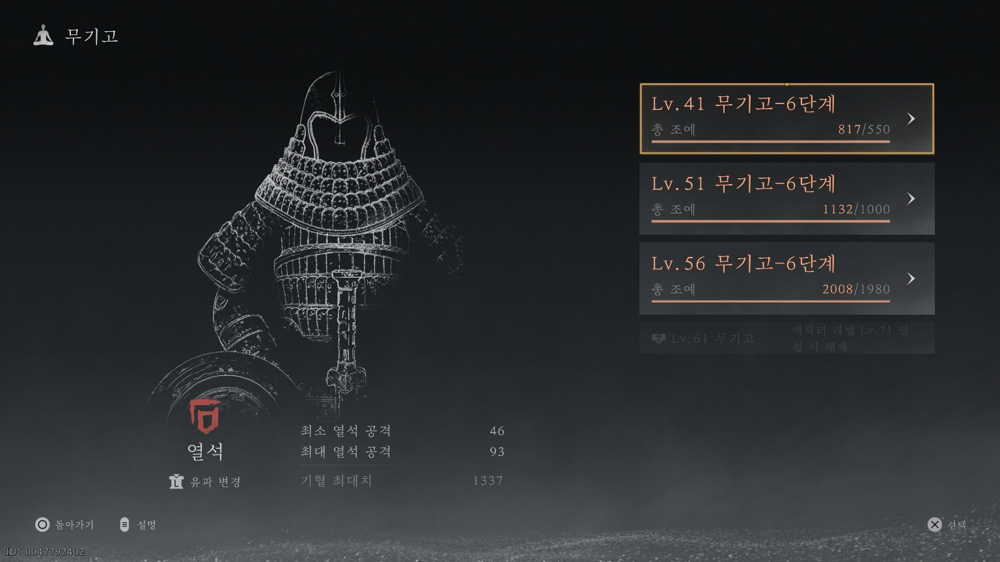

2. 무기고 시스템 (Lv. 40)
레벨 40에 도달하면 무기고가 해금됩니다. 오래된 장비를 함부로 팔거나 분해하지 말아야 하는 핵심 이유입니다.

▲ 무기고 장착 및 보너스 확인

▲ 유파에 따른 속성 선택
-
●
장비 선택: 각 레벨별 최고 수치 아이템을 장착하여 추가 능력치를 확보하세요.
-
●
속성 선택: 현재 무기에 맞는 속성(예: 맥도-열석)을 선택하세요. 유파 변경 시 언제든 교체 가능합니다.
📍
주의 사항 아이템 파기 전, 무기고 등록용으로 점수가 더 높은 아이템인지 반드시 확인하는 습관을 들이세요.